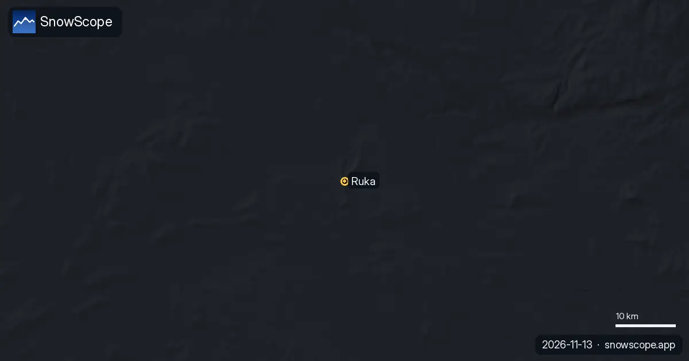

Ruka a dicembre: una settimana bianca da 265 EUR, e quale scegliere
Uno skipass di 6 giorni per adulti a Ruka costa EUR 265 nella stagione 2026-27, uno dei prezzi fissi più bassi per una settimana fuori. La neve è più difficile: l'inizio di dicembre è inaffidabile, ma da metà mese in poi le probabilità cambiano drasticamente a tuo favore, raggiungendo il picco dell'85% degli inverni con 30 cm o più durante la settimana di Natale.
Le previsioni neve in tempo reale per Ruka nell'app SnowScopeAltezza neve, allerte powder e mappa 3D, gratis.
Quando andare per le migliori probabilità di neve
La neve di dicembre a Ruka si accumula durante il mese. Nella prima settimana (1-7 dicembre) solo il 39% degli inverni ha raggiunto 30 cm. Entro l'8-14 dicembre sale al 61%, e da metà mese (15-21 dicembre) sei al 72%. La settimana di Natale (22-28 dicembre) è la più sicura: l'85% degli inverni aveva 30 cm o più entro allora.
Il primo giorno tipico per trovare 30 cm sul terreno è il 5 dicembre, ma questo varia di anno in anno. Se l'inizio di dicembre è la tua unica opzione, controlla la mappa della neve prima di prenotare e preparati per una copertura scarsa.


Profondità della neve durante il mese
Un tipico 15 dicembre, Ruka ha 36 cm su tutta l'area sciistica. Entro il 24 dicembre sale a 40 cm, e alla vigilia di Capodanno sei a 46 cm. Questi sono i dati medi di 46 inverni di storia. In un anno scarso (1 su 10), aspettati solo 20 cm il 15 dicembre; in un anno abbondante, 46 cm.
Quello che non troverai qui è la profondità di polvere. Solo il 4% delle settimane di Natale raggiunge 60 cm o più. Quello che Ruka offre invece è neve liscia, fredda e costante che dura per la stagione. In 46 inverni, il terreno non è mai stato scoperto il 15 dicembre.
L'altitudine non fa quasi nessuna differenza
Ruka è una collinetta bassa e arrotondata con 24 impianti distribuiti su 25 km di piste tra 286 m e 494 m. Poiché il terreno è uniforme e non molto alto, la nostra storia della neve la tratta come una sola zona. La vetta non ha neve misurabilmente più abbondante della base.
Questa uniformità è tipica delle colline della Lapponia. Molto a nord, anche un inverno più caldo rimane abbastanza freddo da mantenere una base. Il vero fattore che determina la profondità della neve è la latitudine e il periodo dell'anno, non l'altitudine su questi pendii dolci.
Costo e tempistica per una settimana in economia
Il prezzo di EUR 265 per 6 giorni è fisso, senza sconti durante la stagione. Lo stesso listino prezzi si applica a Pyhä-Luosto, 50 km a nord-ovest, che offre anche 30 cm da metà dicembre nel 72% degli inverni. Il risparmio non sta in un biglietto più economico ma nel scegliere date al di fuori delle vacanze natalizie, quando l'alloggio è più facile da trovare e a volte meno caro.
Una settimana dal 15-21 dicembre, o 8-14 dicembre se sei flessibile, può ancora trovare buon valore su un alloggio mantenendo le probabilità di neve ben al di sopra di un'incognita.
Cosa portare e cosa aspettarsi
Dicembre nella Lapponia finlandese è buio. Da metà mese il sole sorge appena, e per parte del mese non supera l'orizzonte affatto. La luce diventa blu e rosa per poche ore nel pomeriggio, e gran parte dello sci avviene al crepuscolo o con luce fioca.
Il freddo è secco e penetrante. Porta una buona lampada frontale per le camminate tra le piste, guanti caldi, protezione per il viso e scarponi ben isolati. La quiete delle colline e la luce strana rendono lo sci di dicembre qui unico al mondo.
Consigli per sciatori
- Prenota una settimana dal 15 dicembre in poi: il 72% degli inverni aveva 30 cm quella settimana, contro solo il 39% della prima settimana di dicembre.
- La settimana di Natale (22-28 dic) è la scelta più sicura; l'85% degli inverni ha raggiunto 30 cm o più. Pianifica una settimana intera se possibile per distribuire il valore del tuo skipass di EUR 265.
- Budget EUR 265 per lo skipass, poi concentrati nel trovare un alloggio conveniente prima della ressa di Natale.
- Porta equipaggiamento per il freddo adatto a 46-48°N a livello del mare in inverno; il freddo è severo ma secco. Una lampada frontale è essenziale perché la luce naturale è minima.
- Controlla la mappa SnowScope pochi giorni prima di partire; dicembre può ancora sorprendere, e una copertura scarsa all'inizio del mese può nascondere rocce.
Su questi numeri
Le altezze neve delle località sono la neve più alta sui pendii superiori alla data indicata; sono stime per un'area, non una misura in un punto. Le previsioni possono cambiare. Leggi sempre il bollettino valanghe ufficiale prima del fuoripista.
Bollettini valanghe ufficiali: EAWS – European Avalanche Warning Services
Cita questo articolo
Per ricerca, didattica o stampa: numeri e grafici sono liberamente riutilizzabili con licenza CC BY 4.0 citando così.
SnowScope (2026), Ruka a dicembre: una settimana bianca da 265 EUR, e quale scegliere, https://snowscope.app/blog/it/2026/11/ruka-december-skiing-finland-early-season-price.html, consultato il 2026-11-14
SnowScope (Atlas Labs). (2026, November 14). Ruka a dicembre: una settimana bianca da 265 EUR, e quale scegliere. SnowScope snow reports. https://snowscope.app/blog/it/2026/11/ruka-december-skiing-finland-early-season-price.html
BibTeX
@misc{snowscope2026rukadecemberskiingfinlan,
author = {{SnowScope (Atlas Labs)}},
title = {Ruka a dicembre: una settimana bianca da 265 EUR, e quale scegliere},
year = {2026},
month = nov,
howpublished = {\url{https://snowscope.app/blog/it/2026/11/ruka-december-skiing-finland-early-season-price.html}},
note = {Published 2026-11-14 16:44 UTC; accessed 2026-11-14}
}· CC BY 4.0 · Metodi, dati e strumenti →
Ruka: neve e temperatura per quota, quest'inverno vs lo scorso (strumenti) →
Segui Ruka
Gratis: un messaggio quando arriva la neve e il meteo ogni mattina.